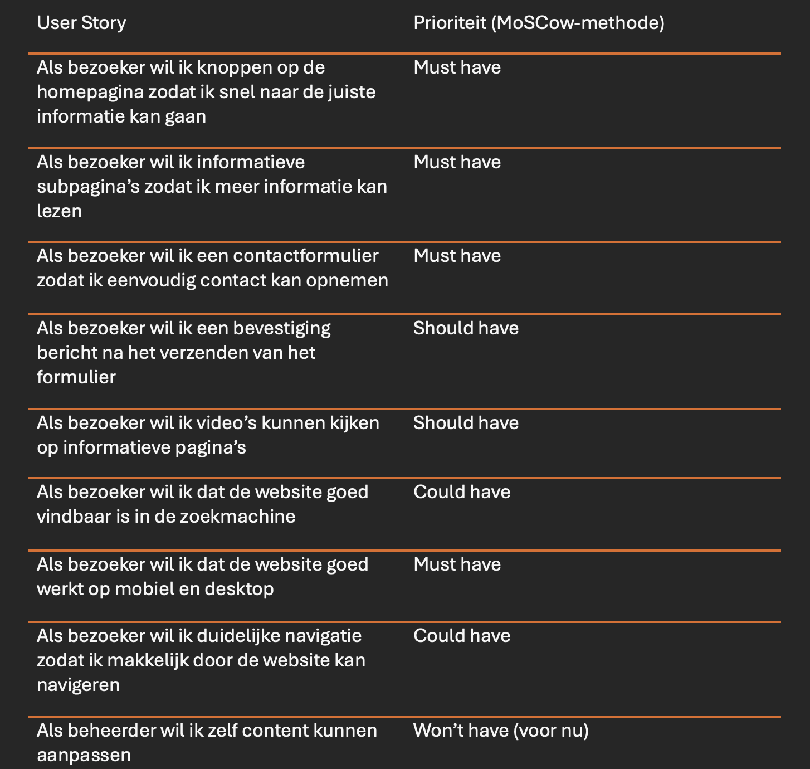
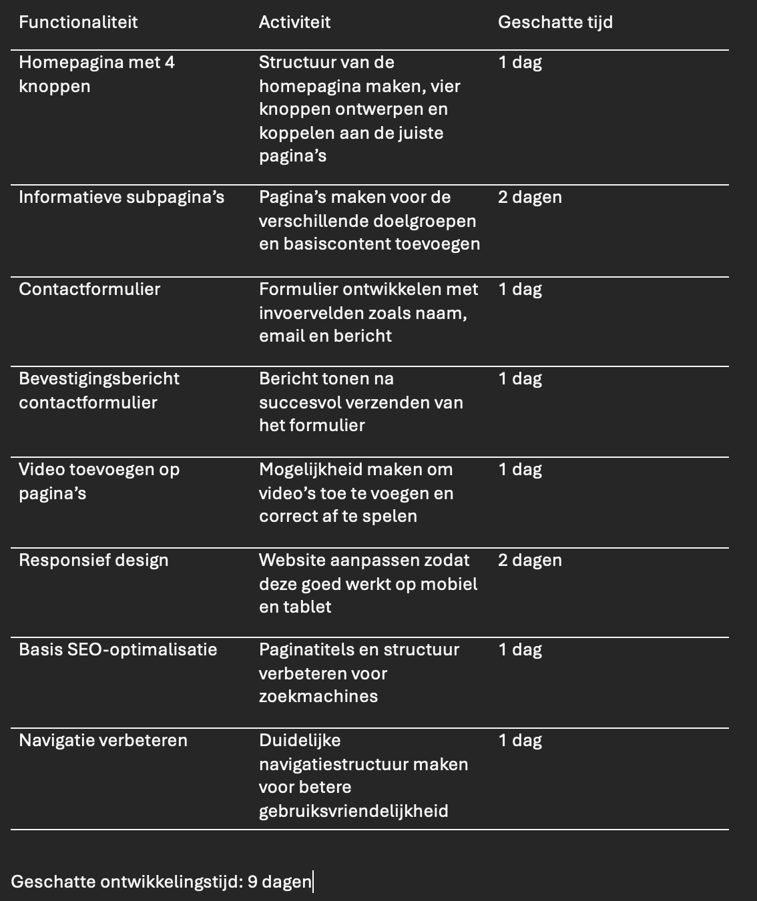
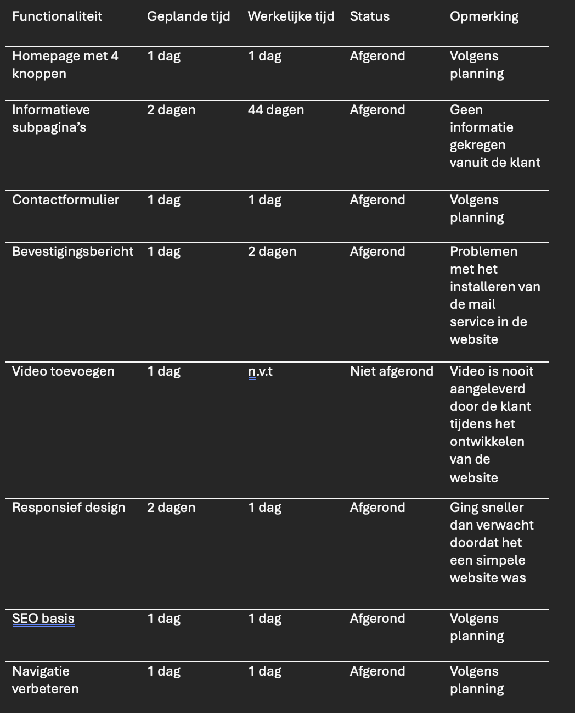

Planning maken, taken verdelen en voortgang bewaken tijdens het ontwikkelproces.
Voor dit werkproces heb ik een projectplanning opgesteld voor een webapplicatie. Ik heb user stories geschreven en deze geprioriteerd met de MoSCoW methode. Vervolgens heb ik een planning gemaakt met de geschatte tijdsduur van het project.
Product Owner / Scrum Master — verantwoordelijk voor planning en voortgangsbewaking.



De planning was realistisch en haalbaar waardoor het project mooi optijd af was.
Vaker aan de bel trekken bij een klant wanneer er onduidelijkheden waren of we infomatie nodig hadden
Het is oke om vaker contact op te zoeken met de klant
In toekomstige projecten zelf meer de leiding nemen in contact met de klant
Het resultaat is een complete projectplanning met user stories, planning en een bewaakte voortgang.